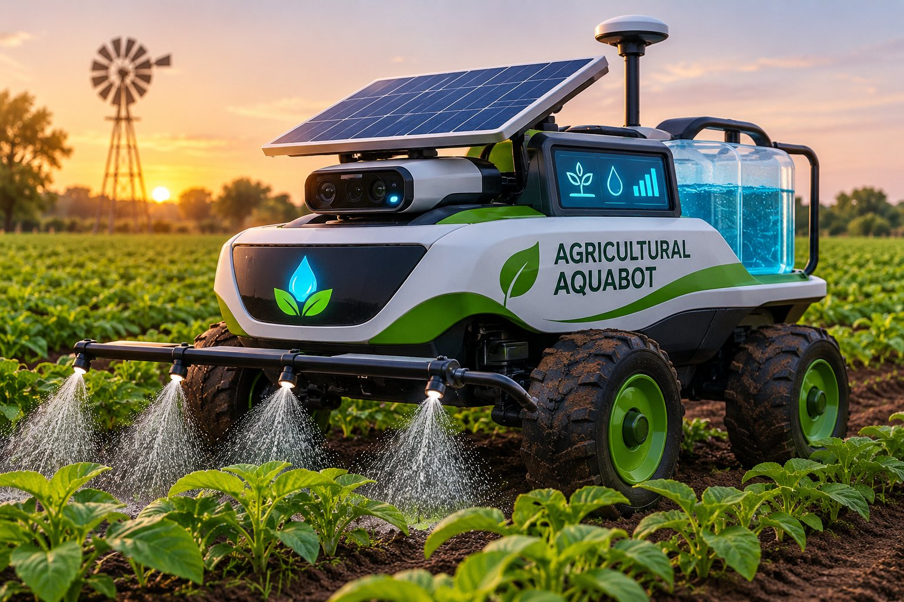

AquaBot
Code. Create. Conquer.
Crowned by innovation, driven by vision. We built AquaBot, a robot that gives every plant the water it needs and no more.
Big farms are hard to watch, plant by plant
Farms are growing, there are fewer people to work them, and a small change in the soil is easy to miss. That means wasted crops, lower yields and a lot of wasted water.
We think technology should help farmers by cutting effort and mistakes, so farming can be more sustainable.
How AquaBot learns
- It measuresAquaBot keeps recording the soil moisture around each plant.
- It noticesIt learns how fast each patch of soil dries and spots unusual changes.
- It predictsIt works out when each plant will need water.
- It remembersIt keeps track of which watering methods worked best.
Three UN goals behind AquaBot
Watering each plant precisely helps people, crops and the planet.
SDG 6
Clean water and sanitation
Plant-by-plant watering cuts down on unnecessary water use.
SDG 2
Zero hunger
Healthier crops, fewer losses and better farm productivity.
SDG 12
Responsible consumption and production
Water and farm resources are used efficiently.
Eight students, one team
Captain: Shreya Eleena Das
- Shreya Eleena Das
- Naina Dachuri
- Anika Deulgaonkar
- Nandita Shetty
- Aashvi Saini
- Stuti Bansal
- Olivia Paul
- Tanvi Iyer